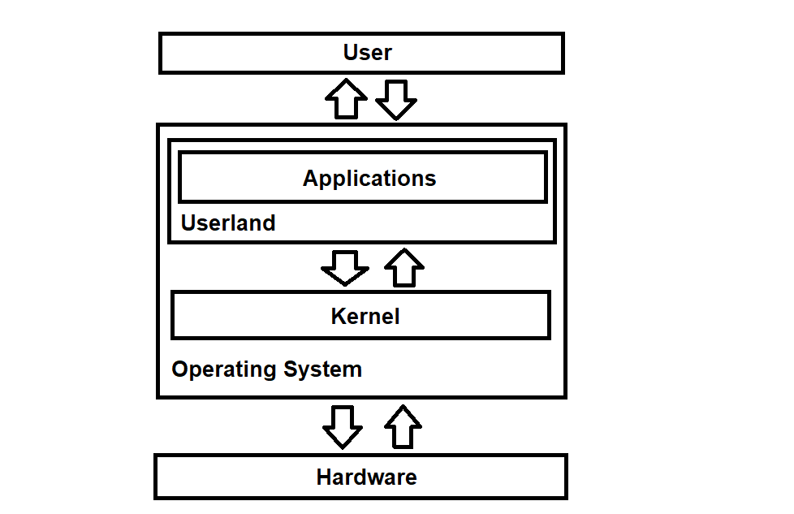
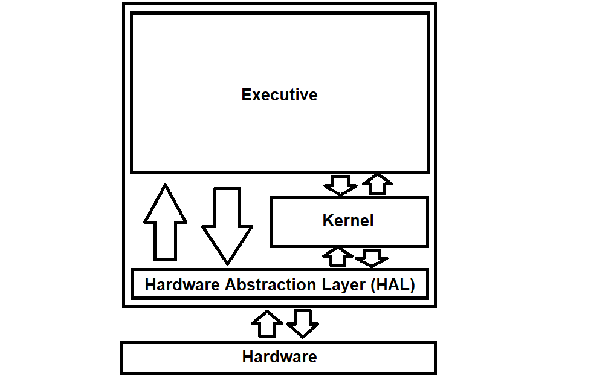
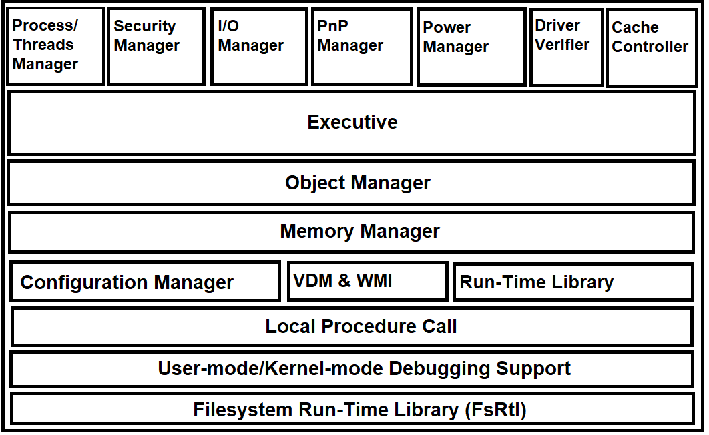

"Introduction to the NT kernel development" is a collection of articles and guidelines for novice people who know coding and OS development but are unfamiliar with the tenets of NT and its principles. Such collection covers theoretical aspects, focusing primarily on the internal specifications and their purpose of the kernel, the overall infrastructure of the kernel, rules and remarks to be addressed whilst contributing for the NT kernel as well as advanced programming topics and whatnot. The articles are also for enthusiasts who wish to know how Windows (and ReactOS) work at the kernel mode level.
The collection will be updated regularly based on my experience and overall journey during the course of my contributions to the kernel.
For NT kernel development in ReactOS the tools needed are the text editor of your choice, the Windows SDK/DDK, WinDBG, RosBE and of course the ReactOS source code. Generally WinDBG comes alongside with the complete Windows SDK as part of "Debugging Tools for Windows". Getting the SDK is dependent upon the version of Windows you have. For instance if you're using Windows 8.1 as main OS of choice for production, you should get the Windows SDK for Windows 8.1. For Windows 10 instead, you can get it here.
The Windows SDK is necessary to get the Microsoft Visual C/C++ compiler (or MSVC for short) as we'll use it primarily to compile the ReactOS kernel code, ReactOS Build Environment (RosBE) is also mandatory as the foundation infrastructure of ROS compilation build environments (CMake, etc). In case you still haven't gotten RosBE yet, consult this article.
The operating system (or OS for short) is an indispensable piece of software that makes your computer useful and essential to every-day life tasks. Whether you read your mails from the E-mail inbox, play video games, listen to music, draw art or do production related work, all of the applications that you use daily to accomplish the aforementioned points are ultimately handled by the OS. Even then, on a person's perspective with no technical knowledge, the OS is like an invisible entity. You don't really care about the OS or even its existence in order to operate with your computer, after all your requirement is to just run applications and that's all.
Unbeknownst to most people the OS wouldn't work in any way without the help of an even more invisible entity to the user, the kernel. The kernel is like the brain and heart combined, its job is to allow interactive cooperation between two physical entities, the user (human) and the computer. To make that happen, the kernel is responsible for managing the hardware of your computer, handling the resources of the said computer, who can use them, what are the limitations imposed on those resources, among other things. The kernel's core functionality is what it makes the interaction between the computer and user possible, with the applications and the user itself called the userspace or userland. The userland is managed internally by the kernel, with the help of so called system calls which I will explain them at a later time. Examples of most notable kernels in the IT world are BSD (Berkeley Software Distribution), the Linux kernel and without a doubt, the NT kernel of Windows. The BSD kernel is adopted by Apple, where iOS of your iPhone runs based on the BSD kernel. The BSD kernel can also be found on the Nintendo Switch, which is the main kernel that the gaming handheld console uses. The Linux kernel on the other hand is used across a plethora of Linux distributions, in supercomputers, servers, your modern fridge, your modern TV, your Android phone, your modern car, medical equipments and so on.
The NT kernel, which Windows is based upon, is used on the desktop computer sector, industrial appliances and other fields. In the collection of Introduction to the NT kernel development articles, we'll focus solely on the NT kernel. Here's a screenshot graph of the interaction between the user, OS, and the hardware.
To give just a small glimpse of history about the NT kernel, the kernel was engineered by David Cutler, known as chief architect and programmer. He worked on creating a kernel alongside with his team whom they worked at Digital before. Cutler and his team worked on developing VMS, a relatively modern operating system at the time. Following the departure from Digital to Microsoft, both Cutler and his team also took many ideals, concepts and principles from VMS and incorporated them into what Cutler would have wanted to work on, a microkernel based on layers and a simple yet robust kernel that deals with scheduling, dispatching, interrupt handling and so forth in order to satisfy the general market and customers needs.
Whilst both IBM and Microsoft at the time were working on OS/2, Cutler wanted to experiment with his kernel by incorporating the base OS/2 APIs, what would've been OS/2 3.0 or OS/2 NT. However as the two companies decided to cut ties on further development of OS/2 considering Windows 3.0 was acclaimed critically by many people and Microsoft has seen a bright future with it, IBM decided to continue working on OS/2 3.0 independently while Microsoft working on Windows 3.0 and Cutler on his kernel, from OS/2 NT which is now Windows NT. If you want to get the whole perspective of the NT kernel's history I recommend reading the Show-Stopper!: The Breakneck Race to Create Windows NT and the Next Generation at Microsoft book, you won't regret it.
Enough with history, here I showcase some important key notes about the NT kernel, summarised:
1. Hybrid kernel -- Initially the NT kernel was sought to be a microkernel in look and engineering stand-point of view. Windows NT 3.51 is a good example. Although with the release of Windows NT 4.0, major chunks of graphics,
font and windowing management code have been moved to kernel mode in a separate kernel mode driver called Win32k.sys. Later on, networking related utility APIs such as IP to string conversion
implemented in the Run-Time Library (or Rtl as prefixed in the source tree) as well as Windows subsystem environment specific APIs such as Windows Management Instrumentation (or Wmi, prefixed as usual). This has led with the
consequence of turning the microkernel into a hybrid one, still retaining the microkernel principles originally thought by Cutler but also sharing some ideas of a monolithic kernel.
2. Modular design -- The nature of the kernel allows the implementation of components to be implemented natively in the kernel, whatever that is. As explained above, not only
it's been possible to implement Windows related APIs like WMI into the NT kernel, another example of an introduced module is Driver Verifier (or Vf).
3. Layered kernel -- The NT kernel's infrastructure is layered into several parts, with such parts encompassing a large chunk called the Executive (which I'll explain later in this article)
and the kernel itself.
4. Multiprocessor support -- The kernel offers multiprocessor support by design, thanks with the help of multiprocessor HALs and SMP.
5. Enhanced security -- Compared to the 9x editions of Windows, Windows NT and in turn the kernel itself has a rock solid foundation of security implementation such as discretionary access control lists
(ACLs) implemented by Security Reference Monitoring (SRM for short or Se, in source tree), among other stuff.
6. Object oriented -- As everything is a file in Unix and its derivates, everything is an object in NT. Files, namespace, symbolic links, directories, processes, et al, are all objects. Albeit the C programming
language which the kernel is written in doesn't support any OO facilities like you'd see in C++, the actual object oriented ideals are implemented in the kernel thorough various algorithms in order to have a OO style.
Such algorithms are implemented in a module so called the Object Manager (or Ob).
7. Reentrant & Preemptive -- The kernel code is fully reentrant, that is, the execution is done asynchronously without having to wait for a specific thread to finish its operation on a routine. Or in other words, threads can execute
kernel routines asynchronously. The scheduler of the kernel is also preemptive, as in, it interrupts whatever current operation and schedules its further completion at a later time.
8. Thread-based scheduler -- The NT scheduler schedules threads, not processes.
9. Multiple architecture support -- i386, AMD64, MIPS, IA-32, PPC, Alpha, and ARM.
In this section of the article we'll focus primarily on the architecture and overall infrastructure of the NT kernel so that you can familiarise yourself with the general development of the kernel and how things are done. In essence, an operating system like Windows functions in two distinct worlds, or entities if you want to call them like that. Such entities are called user and kernel modes. As said earlier, the kernel is divided amongst layered parts that all reside in kernel mode and these parts belong to a larger chunk called the Executive, as shown in the graph below:
And if we further bisect the Executive layer, we'll see a bunch of subsystem components as shown:
The Executive is basically a collection of high-level kernel APIs with the scope to extend the functionality of the kernel and provide the ability for kernel mode drivers to manage the hardware. Each component operates dependently, with each of them accomplishing very specific tasks that represent the purpose of the said component(s) as a whole. It is WORTH NOTING that the Executive does not represent the actual kernel itself as you can see in the other graph above the kernel is a separate entity that operates on its own but cooperates significantly with the Executive and in some part with the HAL. Both the kernel and the Executive layers are embodied in a process image called ntoskrnl.exe, also referred as the NT kernel image (or if we want to go even more verbose, NTOS as in the NT operating system and kernel). To get a detailed presentation of the NT kernel source tree, consult this article.
I'll explain detail by detail what are the components about and their purpose. So let's get right into it.
cache -- Also called the cache controller or the cache manager, is a centralised caching manager that caches data in and out from various forms of medium, let it be your storage, the optical drive, netowrks, etc. It's an unified component that every filesystem of Windows (and ultimately ReactOS) use the cache manager as a mean to avoid cache manager duplication and even further duplication of memory management code. The cache manager cooperates deeply with the memory manager, as the former has to understand what parts of files are in the physical memory.
The cache manager is also in charge of cache coherency, among other stuff. Furthermore, the cache manager operates on the basis of caching data on virtual blocks unlike in other systems where data is cached
on logical blocks. The routines that belong to this module are prefixed with Cc.
config -- The config component, known as the Configuration Manager, is the very literal foundation of the Registry which is the central hierarchical database of data stored by applications,
device drivers, the system itself and so on. The routines that belong to this module are prefixed with Cm.
dbgk -- Also called the User-Mode debugging support, nothing much has to be said further about this component. The routines that belong to this module are prefixed with Dbgk.
ex -- Interestingly enough, the Executive also comes with its own component named with the same terminology. The executive module provides several API routines ranging from timers, memory pool
allocation, events, rundown protection mechanism and a whole lot more. In addition, the executive is also responsible for the rest of the NT kernel phase boot initialisation once it (the kernel) gained
control from the bootloader. Without a doubt, the executive is also responsible for shutdown phase procedure as well. The routines that belong to this module are prefixed with Ex.
fsrtl -- The filesystem run-time library provides API calls for streams operation, Fast I/O entry points, mapped control block (MCB), UNC support and so on for filesystem drivers. Just like the cache manager is used
by filesystems for caching management, same is for for the filesystem Rtl used by filesystems for run-time operations. The routines that belong to this module are prefixed with FsRtl.
io -- The I/O component is based into two main kernel managers: the I/O and PnP manager. The two manager components make up the whole I/O system of the kernel that is responsible for device drivers
support, hardware I/O bus management, device loading/unloading, and so on. The PnP manager specifically accomplishes that purpose of providing a general interface where device drivers can be written based on that
interface. The I/O manager implements the concept of IRPs (I/O Request Packets). The routines that belong to this module are prefixed with Io and Pnp.
kd64 -- Kernel debugger implementation support. The routines that belong to this module are prefixed with Kd.
lpc -- Local Procedure Communication is a component used for inter-process communication (IPC) across processes in the same system. The routines that belong to this module are prefixed with Lpc.
mm -- The memory manager is a fundamental part of the NT kernel that deals with the allocation of virtual and physical memory, virtual address handling, paging support, trimming, flushing
of dirty data and so forth. This component implements the foundation of concepts such as memory-mapped files, shared memory, copy-on-write, etc. The routines that belong to this module are prefixed with Mm.
ob -- The object manager is an ubiquitous component of not just the NT kernel but the whole Windows operating system (and ReactOS for that matter). The idea that everything is a object in the system is only because
of that component. The object manager is responsible for everything that is about the objects themselves, from object creation to the cleanup and destruction of the said object. The object manager also creates a subset of its
own objects and it contains a centralised pool sector where all objects are monitored and tracked. The routines that belong to this module are prefixed with Ob.
po -- The power manager, as the name implies, is in charge for the power state handling of the system. Interestingly enough, the power manager is closely tied with the I/O manager as it implements a subset of IRPs
specifically for that component, called Power IRPs which are classified as special IRPs. The routines that belong this module are prefixed with Po.
ps -- The process structure, also called Process/Threads Manager, is responsible for the creation and termination of the processes and threads in Windows. Besides that, the process structure provides several
API calls for process/threads manipulation such as querying/setting internal information to these entities, quota handling of processes, thread/process execution alteration and so on. In the very same module, the
process structure implements Win32 specific callbacks. The routines that belong to this module are prefixed with Ps (although it's worth noting that application shim support in the kernel do not share
the same prefix but begin with Apphelp instead).
rtl -- The Run-Time Library is a collection set of routines exported for use by the kernel and kernel mode drivers alike. Routines such as data type conversion, string manipulation, arithmetic operations,
locale handling, heap memory allocation and so on. The routines that belong to this module are prefixed with Rtl.
se -- Security Reference Monitoring (SRM in short or just Se) is a component of the Executive with the task of monitoring the overall activity of objects, their access rights, setting up barriers against unauthorised
access, limiting such access thorough privileges, groups, ACLs and DACLs (access control lists and discretionary access control lists), and so on. The security manager is the basis of the security concepts
of the NT kernel, and especially, with the implementation of access tokens. As the object manager is to object creation, the security manager is to object security monitoring. Furthermore, it also performs
security auditing, accounting, etc. The routines that belong to this module are prefixed with Se.
vdm -- The Virtual DOS Machine is a component that offers WoW16 capability (Windows 16-bit on Windows 32-bit) by allowing 16-bit DOS software to be ran on a 32-bit Windows system in form of virtual DOS machines, hence the name.
Vf -- Driver Verifier wasn't something that was introduced with the early development of the kernel, until many years. This module basically stresses the kernel mode drivers in odd ways in order to make them
fail. This drastically helps with bugs hunting, further making the drivers more stable. The routines that belong to this module are prefixed with Vf.
wmi -- The last component of the Executive concerns mostly with the Windows subsystem environment, which name being Windows Management Instrumentation. It is responsible for the management of other components and
monitoring the overall activity of the Windows subsystem environment. The routines that belong to this module are prefixed with Wmi.
The kernel is a minimalistic, simple designed yet robust in charge with interrupt handling and dispatching, thread scheduling, multiprocessor synchronisation support, trap and exception dispatching.
Sometimes other documentations refer to it as a microkernel which in fact is true, concerning its nature and especially the idea behind of having an API library like the Executive. Every component in the kernel mode
space have their own subset of objects and the kernel is not exempt from this. As a matter of fact, the kernel offers several objects such as mutexes, semaphores, timers, threads, locks and whatnot. The routines that belong
to the kernel are prefixed as Ke.
The scope of HAL is to hide hardware differences by abstracting hardware specific features or specifications onto code so that there won't be any overhead for the kernel, and at the same time providing a consistent infrastructure
in the kernel space. Even though the HAL is separate from the kernel and the Executive, this component doesn't operate fully independently on its own. Both the HAL and kernel cooperate together, most of the time. The routines that
belong to this module are prefixed with Hal.
The NT API can be classified into two main parts: executive and kernel APIs. That is, the executive APIs are the libraries from the Executive itself that can be used across kernel mode drivers, other than the kernel itself, and that applies the very same thing for the kernel APIs too. The APIs comprehend a variety of functions exported to the public use as well as non-exported ones only used by the kernel. Although the goal of "Introduction to the NT kernel development" is to help you dwelling deep onto the kernel and everything that is tied to it, in this section of the article we're going to take a glimpse at the exported functions only, categorised in specific labels.
It is also important to take into consideration that many functions, even if not exported, are private which cannot be called outside of other components in the NT kernel even. Although this is something that I'll be going to explain that thoroughly in the "topology of function prefixes" later.
1. Callback calls -- CmRegisterCallback, CmRegisterCallbackEx, CmUnRegisterCallback, CmGetCallbackVersion, CmSetCallbackObjectContext, et al.
2. Transaction calls -- CmGetBoundTransaction, et al.
1. Copy/Read calls -- CcCanIWrite, CcFastCopyRead, CcFastCopyWrite, CcCopyRead, CcCopyWrite, CcDeferWrite, et al.
2. Write preparation calls -- CcMdlWriteComplete, CcPrepareMdlWrite, CcPreparePinWrite, et al.
3. Cache mapping initialisation calls -- CcUninitializeCacheMap, CcInitializeCacheMap, et al.
4. Pinning calls -- CcPinMappedData, CcPinRead, CcRepinBcb, CcUnpinData, CcUnpinDataForThread, CcUnpinRepinnedBcb, et al.
1. Events calls -- IoCreateNotificationEvent, IoCreateSynchronizationEvent, et al.
2. I/O Timers calls -- IoInitializeTimer, IoStartTimer, IoStopTimer, et al.
3. IRPs manipulation calls -- IoAllocateIrp, IoCancelThreadIo, IoForwardIrpSynchronously, IoGetPagingIoPriority, IoGetTopLevelIrp, IoInitializeIrp, et al.
4. Volume support calls -- IoUnregisterFileSystem, IoRegisterFsRegistrationChange, IoVolumeDeviceToDosName, et al.
5. Symbolic links calls -- IoCreateSymbolicLink, IoCreateUnprotectedSymbolicLink, IoDeleteSymbolicLink, et al.
6. Remove locks (REM) support calls -- IoInitializeRemoveLockEx, IoAcquireRemoveLockEx, IoReleaseRemoveLockEx, IoReleaseRemoveLockAndWaitEx, et al.
7. Interrupt requests (IRQ) calls -- IoConnectInterrupt, IoDisconnectInterrupt, et al.
1. Query/Set process and threads information calls -- NtQueryInformationProcess, NtSetInformationThread, NtQueryInformationThread, NtSetInformationProcess, et al.
2. Pool Quota management calls -- PsChargeProcessPageFileQuota, PsChargePoolQuota, PsChargeProcessNonPagedPoolQuota, PsReturnPoolQuota, et al.
3. Security process calls -- NtOpenProcessToken, NtOpenProcessTokenEx, PsReferencePrimaryToken, PsOpenTokenOfProcess, PsRevertThreadToSelf, PsImpersonateClient, et al.
4. Thread/Process kill calls -- PsTerminateSystemThread, NtTerminateProcess, NtTerminateThread, NtRegisterThreadTerminatePort, et al.
5. Process notification calls -- PsSetCreateProcessNotifyRoutine, PsSetLegoNotifyRoutine, PsRemoveLoadImageNotifyRoutine, et al.
1. Access tokens calls -- NtOpenThreadToken, NtCompareTokens, NtFilterToken, NtImpersonateAnonymousToken, SeIsTokenChild, SeSubProcessToken, et al.
2. Access & check calls -- SeCaptureSubjectContext, SeLockSubjectContext, SeCreateAccessStateEx, SeAccessCheck, SeFastTraverseCheck, et al.
3. Auditing calls -- SeDetailedAuditingWithToken, SeAuditProcessCreate, SeInitializeProcessAuditName, et al.
4. Privileges handling calls -- SePrivilegePolicyCheck, SeCheckAuditPrivilege, SeCaptureLuidAndAttributesArray, SeAppendPrivileges, et al.
1. Shutdown procedure calls -- PoRequestShutdownWait, PoQueueShutdownWorkItem, PoRequestShutdownEvent, NtInitiatePowerAction, et al.
2. Power events suppor calls -- PoNotifySystemTimeSet, et al.
3. Volume handling calls -- PoRemoveVolumeDevice, PoInitializeDeviceObject, et al.
1. Executive callbacks calls -- ExInitializeCallBack, ExAllocateCallBack, ExNotifyCallback, ExRegisterCallback, ExCompareExchangeCallBack, et al.
2. Fast mutex calls -- ExAcquireFastMutexUnsafe, ExReleaseFastMutexUnsafe, ExEnterCriticalRegionAndAcquireFastMutexUnsafe, ExReleaseFastMutexUnsafeAndLeaveCriticalRegion, et al.
3. Mutant calls -- NtCreateMutant, NtOpenMutant, NtQueryMutant, NtReleaseMutant, et al.
4. Rundown Protection calls -- ExfAcquireRundownProtection, ExfInitializeRundownProtection, ExfWaitForRundownProtectionRelease, ExfAcquireRundownProtectionCacheAware, et al.
5. Timers calls -- ExTimerRundown, NtOpenTimer, NtQueryTimer, NtSetTimer, et al.
6. Locale support calls -- NtSetDefaultLocale, NtQueryDefaultLocale, NtQueryInstallUILanguage, NtQueryDefaultUILanguage, et al.
7. Resource calls -- ExReleaseResourceLock, ExAcquireResourceLock, ExDeleteResourceLite, ExGetSharedWaiterCount, ExInitializeResourceLite, et al.
8. Pushlock calls -- ExfAcquirePushLockShared, ExfReleasePushLock, ExfReleasePushLockShared, ExfReleasePushLockExclusive, et al.
9. Look-Aside List calls -- ExInitializeSystemLookasideList, ExDeletePagedLookasideList, ExInitializeNPagedLookasideList, ExInitializePagedLookasideList, et al.
1. Object handle opening/insertion calls -- ObOpenObjectByName, ObOpenObjectByPointer, ObFindHandleForObject, ObInsertObject, ObSetHandleAttributes, et al.
2. Object life monitoring calls -- ObQueryTypeInfo, ObCreateObject, ObCreateObjectType, ObDeleteCapturedInsertInfo, NtMakeTemporaryObject, NtSetInformationObject, et al.
3. Referencing/Dereferencing object calls -- ObReferenceObjectSafe, ObFastReferenceObject, ObFastReplaceObject, ObReferenceFileObjectForWrite, ObfDereferenceObject, et all.
4. Waiting calls -- NtWaitForMultipleObjects, NtWaitForMultipleObjects32, NtWaitForSingleObject, NtSignalAndWaitForSingleObject, et al.
5. Symbolic link object calls -- NtCreateSymbolicLinkObject, NtOpenSymbolicLinkObject, NtQuerySymbolicLinkObject, et al.
1. Pool allocation calls -- ExAllocatePoolWithTag, ExAllocatePool, ExFreePoolWithTag, ExFreePool, ExAllocatePoolWithTagPriority, et al.
2. Dynamic memory manipulation support calls -- MmAddPhysicalMemory, MmMarkPhysicalMemoryAsBad, MmMarkPhysicalMemoryAsGood, MmRemovePhysicalMemory, MmGetPhysicalMemoryRanges, et al.
3. Driver management calls -- MmUnlockPageableImageSection, MmLockPageableSectionByHandle, MmTrimAllSystemPageableMemory, MmAddVerifierThunks, MmIsDriverVerifying, MmIsVerifierEnabled, et al.
4. I/O Mapping calls -- MmMapIoSpace, MmUnmapIoSpace, MmMapVideoDisplay, MmUnmapVideoDisplay, MmIsIoSpaceActive, et al.
5. MDL support calls -- MmAllocatePagesForMdl, MmAllocatePagesForMdlEx, MmFreePagesFromMdl, MmMapLockedPagesSpecifyCache, MmMapLockedPages, et al.
6. Page faulting calls -- MmSetExecuteOptions, MmGetExecuteOptions, MmAccessFault, et al.
7. Sections support calls -- MmMapViewOfSection, MmDisableModifiedWriteOfSection, MmForceSectionClosed, MmMapViewInSessionSpace, MmUnmapViewInSessionSpace, et al.
8. Virtual memory calls -- MmCopyVirtualMemory, MmFlushVirtualMemory, NtFlushVirtualMemory, NtGetWriteWatch, et al.
1. APC calls -- KeEnterCriticalRegion, KeLeaveCriticalRegion, KeInitializeApc, KeInsertQueueApc, et al.
2. Balance Manager -- KeBalanceSetManager, et al.
3. DPC support calls -- KeInitializeThreadedDpc, KeInitializeDpc, KeInsertQueueDpc, KeFlushQueuedDpcs, et al.
4. Event Dispatcher calls -- KeClearEvent, KeInitializeEvent, KePulseEvent, KeReadStateEvent, KeResetEvent, KeSetEventBoostPriority, et al.
5. Exception handling calls -- NtRaiseException, NtContinue, et al.
6. Gate Dispatcher calls -- KeInitializeGate, KeWaitForGate, KeSignalGateBoostPriority, et al.
7. Mutant Dispatcher calls -- KeInitializeMutant, KeInitializeMutex, KeReleaseMutant, KeReadStateMutant, et al.
8. Kernel process management calls -- KeSetProcess, KeInitializeProcess, KeSetQuantumProcess, KeSetAffinityProcess, KeSetAutoAlignmentProcess, KeSetPriorityAndQuantumProcess, et al.
9. Kernel profiling calls -- KeInitializeProfile, KeStartProfile, KeStopProfile, KeQueryIntervalProfile, et al.
10. Kernel thread objects calls -- KeReadyThread, KeAlertThread, KeBoostPriorityThread, KeForceResumeThread, KeFreezeAllThreads, KeRundownThread, et al.
11. Semaphore Dispatcher calls -- KeInitializeSemaphore, KeReadStateSemaphore, KeReleaseSemaphore, et al.
12. Kernel queue calls -- KeInitializeQueue, KeInsertHeadQueue, KeReadStateQueue, KeRemoveQueue, KeRundownQueue, et al.
13. Kernel device queue calls -- KeInitializeDeviceQueue, KeInsertDeviceQueue, KeInsertByKeyDeviceQueue, KeRemoveDeviceQueue, KeRemoveEntryDeviceQueue, et al.
14. Clock support calls -- KeSetSystemTime, KeQueryTimeIncrement, KeQueryTickCount, KeQuerySystemTime, KeQueryInterruptTime, et al.
15. Bugcheck (Blue Screen of Death) mechanism calls -- KeGetBugMessageText, KeInitializeCrashDumpHeader, KeDeregisterBugCheckCallback, KeDeregisterBugCheckReasonCallback, KeBugCheckEx, KeBugCheck, KeEnterKernelDebugger, et al.
{kind=link}
{kind=link}
{kind=link}